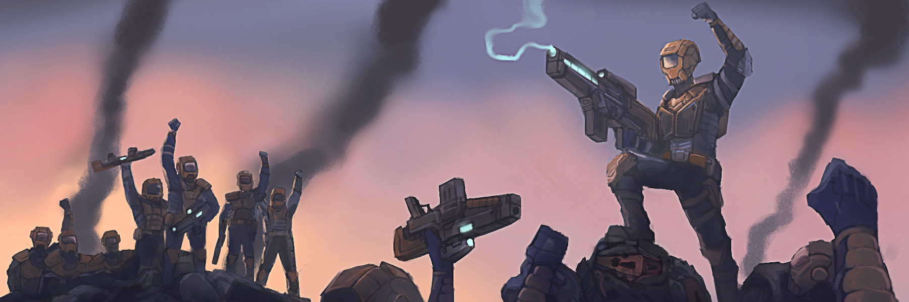

ОСНОВНЫЕ ПРАВИЛА ПРОЕКТА

Задача проекта — дарить участникам свободу, удовольствие и возможность строить уникальные истории. Для этого публикуются собственные временные линии, фракции и игровые описания, позволяющие максимально точно погрузиться в происходящее на игровом поле. Проект не претендует на авторские права других вселенных и не ставит перед собой коммерческих целей. Это пространство создано исключительно ради творчества, совместной игры и тех эмоций, которые дарит ролевое сообщество.
Основой правил является то, что администрация не влияет никак на игровой процесс и не имеет права вставать на чью либо сторону. Администрация может играть в проекте как фракция, организация или персонажи, и подчиняются общим ролевым правилам.
Как только вы подали заявку на регистрацию фракции, и ее одобрили, вы автоматически согласились с правилами проекта, прочитали вы их или нет. Незнание правил не освобождает вас от ответственности.
Права игроков и кодекс администрации
Игрок имеет право оспорить действия администратора, независимо от своих отношений с ним в рамках ролевого взаимодействия, а также вне зависимости от положения и полномочий администратора в игре. Каждый участник проекта «Классической Эры», включая членов администрации, обязан строго соблюдать установленные правила игры. Нарушение установленных правил влечет за собой немедленные и соответствующие санкции, а степень тяжести наказания зависит от серьезности нарушения.
Незнание правил не служит основанием для избежание ответственности; каждый участник обязан ознакомиться с правилами и следовать им. Правила предоставляются в открытом доступе и поддерживаются актуальными, обеспечивая прозрачность и понимание стандартов поведения в проекте. При возникновении разногласий или конфликтов в интерпретации правил, администрация обязуется предоставить механизм разрешения споров, поддерживая справедливость и объективность. Игроки могут предоставлять конструктивную критику и предложения по улучшению правил, стимулируя диалог и совместную работу для усовершенствования проекта.
Все жалобы на действия администрации будут рассматриваться с соблюдением принципов справедливости и независимости, гарантируя объективное расследование. Администрация обязуется соблюдать конфиденциальность в процессе рассмотрения жалоб, защищая личные данные участников. Правила могут подвергаться эволюции и изменениям с учетом обратной связи от игроков, стремясь к совершенствованию и актуализации структуры проекта. Любые изменения в правилах будут предварительно объявляться, предоставляя участникам достаточное время для ознакомления и адаптации.
Администрация предоставляет обучение и поддержку игрокам, содействуя полному пониманию правил и стимулируя их активное участие в проекте. Игроки имеют право обращаться с вопросами и просьбами по интерпретации правил, получая подробные и понятные ответы. Проект стремится к инновациям и экспериментам, при условии, что они не противоречат основным принципам и целям проекта. Значимые изменения, связанные с инновациями, предварительно обсуждаются с сообществом, позволяя игрокам высказывать свои мнения. Все участники проекта, включая администрацию, обязаны совместными усилиями развивать и улучшать «Классическую Эру», стремясь к общему процветанию и удовлетворению от игрового процесса.
- Администрация обязуется активно поддерживать порядок, развивать проект и обеспечивать справедливость внутри сообщества.
- Администрация обязуется быть беспристрастной и честной по отношению ко всем участникам проекта, независимо от их статуса.
- Администрация строго соблюдает разделение игровых и административных функций, избегая смешивания рп-взаимоотношений с административными решениями.
- Администрация обязуется своевременно реагировать на нарушения правил и принимать соответствующие меры.
ДИСЦИПЛИНАРНЫЙ РЕГЛАМЕНТ
Обсуждение политики, оскорбление участников, переходы на личности при конфликтах, спам, контент 18+ строго запрещены, караясь удалением из официальной беседы-флудилки сроком на день. При повторных случаях нарушениях, администрация вправе лишить доступа к официальной беседе-флудлике навсегда.
Причиной блокировки за контент 18+ только потому, что некоторые лица могли не достигнуть возраста совершеннолетия, а так же контроля адекватного поведения даже в официальной беседе-флудилке. Игроки вправе создавать свои беседы-флудилки, но отношение к официальной группе и регулироваться администрацией и правилами не будут.
Если это была ошибка в расчётах и это будет доказано, только при таком случае возможен пересмотр блокировки. Впрочем если у фракции из ниоткуда появится двадцать линейных кораблей, или лишний миллиард на счётах, блокировка будет абсолютно правильной.
Заморозка фракции будет в случае не активности в течении одной недели. Фракция будет удалена, а её активы ликвидированы в случае, если в течении одной недели после заморозки, игрок не появится. Проект учтёт заморозку на необходимый срок по просьбе игрока, и продлит её заморозку тоже в случае просьбы, к примеру экзаменационная сессия или рабочие дела, которые мешают игроку вернуться к ВПИ или РП сегменту игрового процесса.
Администрация оповещает о выходе дополнений к основному игровому процессу за месяц и не раньше. Все дополнение обсуждаются с игроками и не могут быть добавлены в игровой процесс, если большинство против. Администрация выносит выговоры или банит участников в согласие с правилами и законами проекта. Остаточный приговор выносит ГА проекта, и его решение не имеет право подвергаться противоречию.
Главный Администратор проекта выносит не только финальный приговор нарушениям игрового процесса, но и может самолично принимать решение еще до обсуждения с администрацией, на его усмотрение. Конечно, это максимально редкие случаи, и только потому что других администраторов к примеру нет на месте. Администрация вправе принять решение коллективно ЗА или ПРОТИВ, если администратор не появился в течении трёх дней.
Тайные операции и отчетность
Тайные приказы — ключевая часть внутренней политики фракций. Любые операции, связанные с разведкой, шпионажем, диверсиями или передачей секретных данных, должны проводиться через специально назначенных агентов и командиров. Информация о таких действиях запрещена к публичному обсуждению в открытых каналах и доступна лишь ограниченному кругу доверенных лиц.
Нарушение конфиденциальности может привести к серьёзным последствиям для фракции и её агентов. Для ролевого отыгрыша рекомендуется использовать приватные чаты и отдельные документы с пометкой «секретно». Отчёты по выполненным тайным заданиям оформляются кратко и отправляются руководству в закрытом формате.
Посты на стене группы служат для информирования участников фракции о важных событиях, изменениях в политике, новых заданиях и достижениях. Они должны быть чёткими, лаконичными и содержать актуальную информацию. Запрещается публиковать неподтверждённые слухи или материалы, которые могут вызвать внутренние конфликты без согласования с руководством. Новости публикуются регулярно — минимум один раз в неделю, чтобы поддерживать интерес и вовлечённость членов фракции.
Фракции обязаны вести финансовую и хозяйственную отчётность в личном сообщении главной группе по составленному шаблону. В отчете фиксируются доходы от деятельности, расходы на содержание, строительство и развитие инфраструктуры. Все данные должны быть заполнены аккуратно и своевременно, с учётом игровых событий и реальных решений руководства.
Ошибки или пропуски в отчётности могут повлиять на игровой баланс и финансовую стабильность фракции.